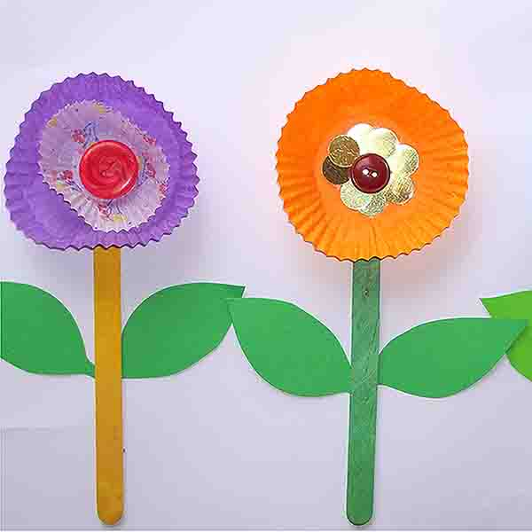

April 14, 2014

The kids made some lovely craft paper flowers for the classroom today.
April 11, 2014
Today, we simulated the behavior of bees in a hive. We took turns being worker bees,
nurse bees, baby bees (larvae, a new vocab), and the queen bee! The worker bees would
go out and collect nectar (popcorn in our case!) and the nurse bees feed nectar to the
larvae. The queen bee is also pampered by the worker bees and nurse bees, and her job,
we studied, is just to sit and lay eggs all day! All in all, it was a very busy BEE day!
 Cursive writing practice!
Cursive writing practice!